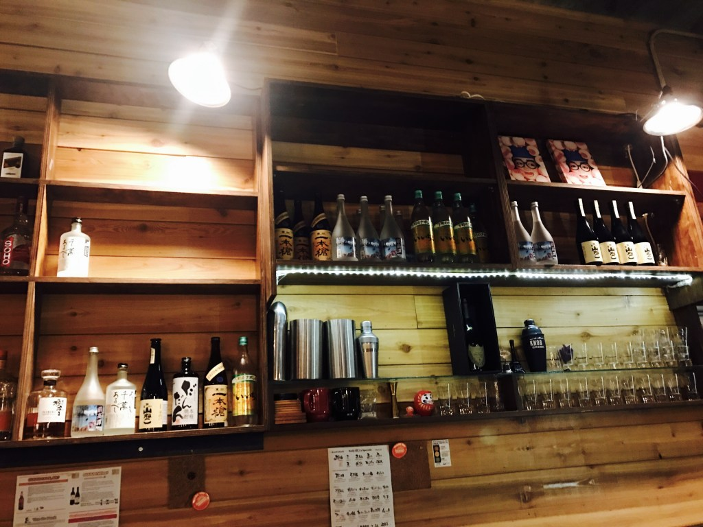
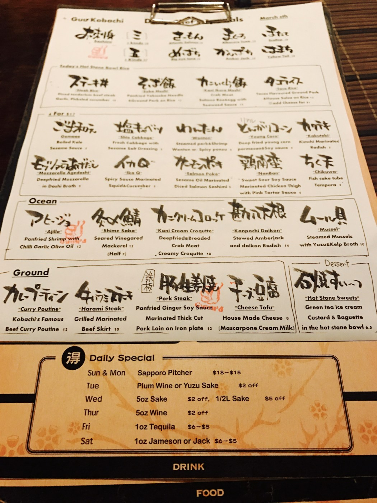
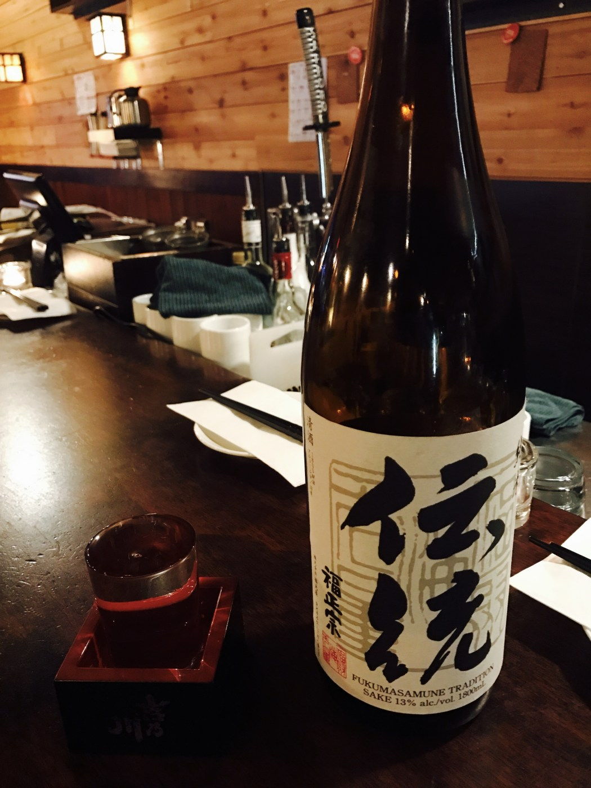
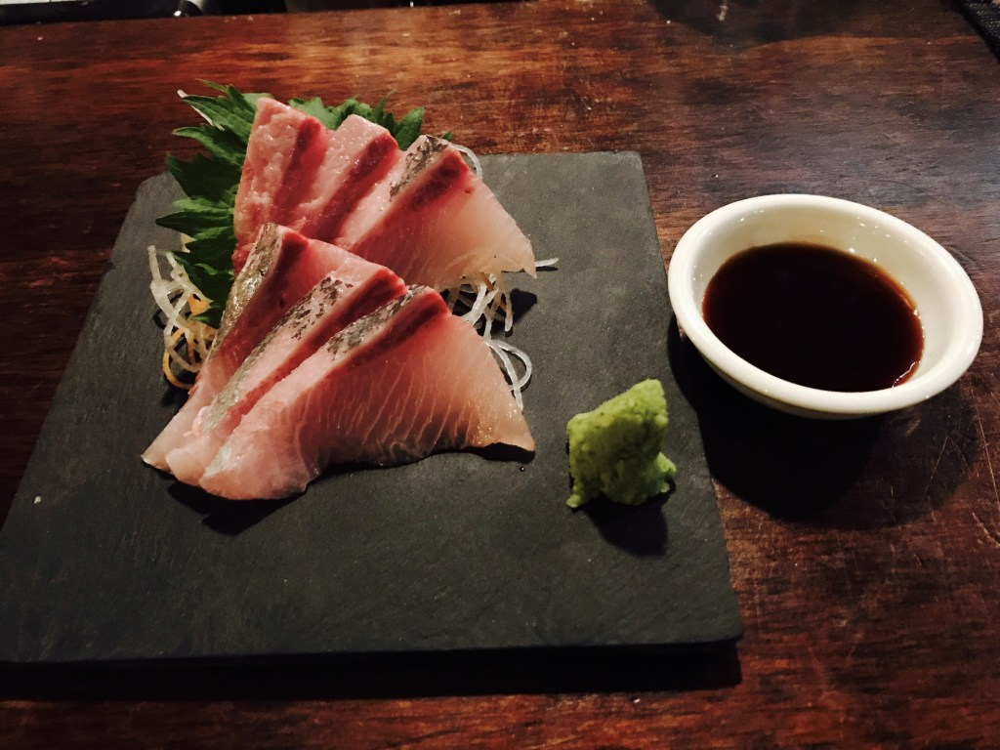
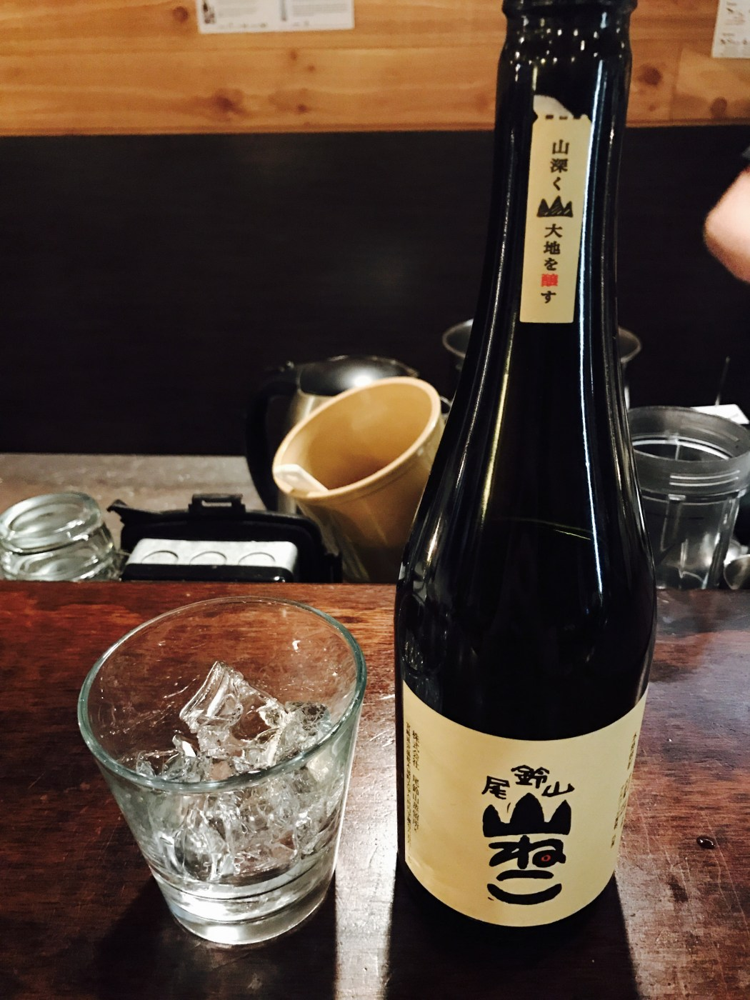
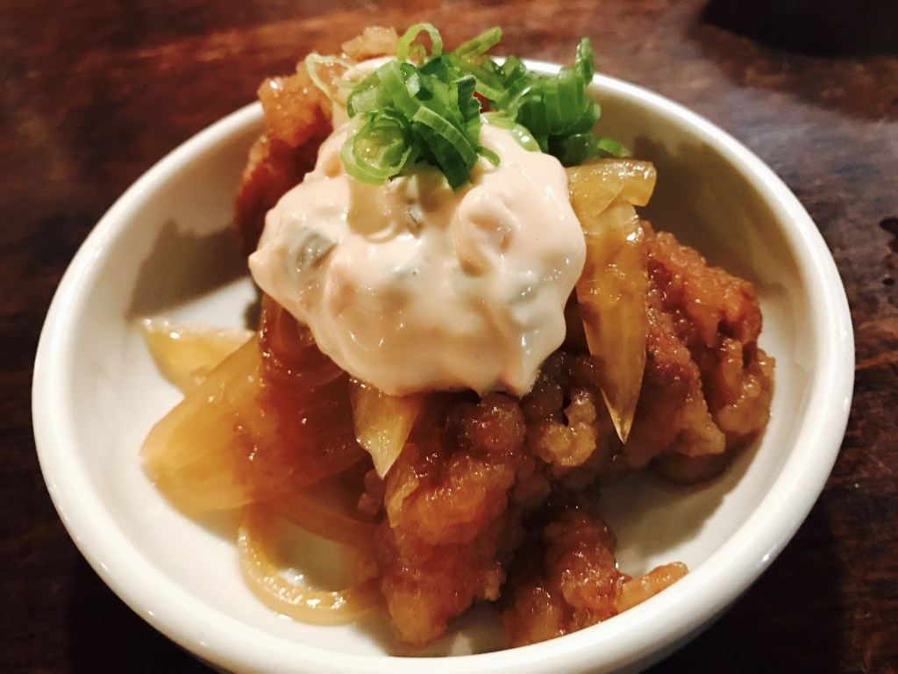
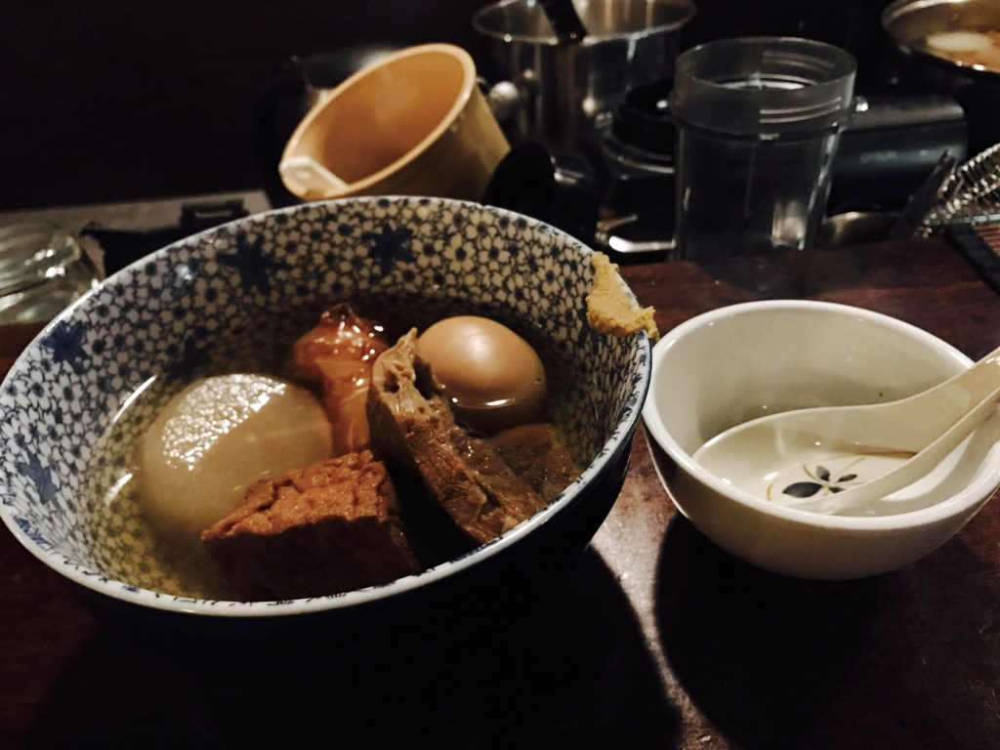
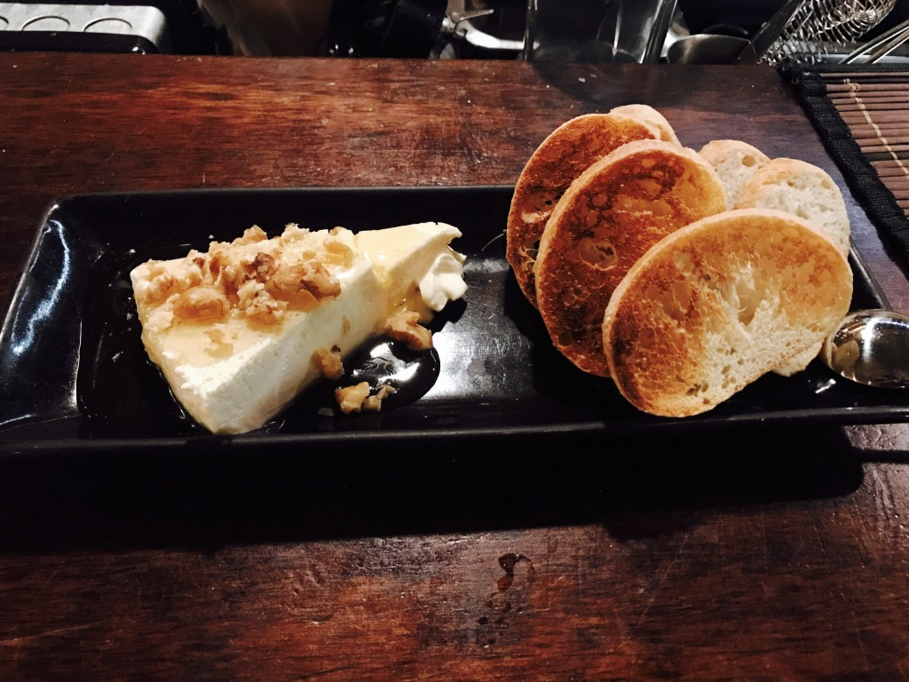
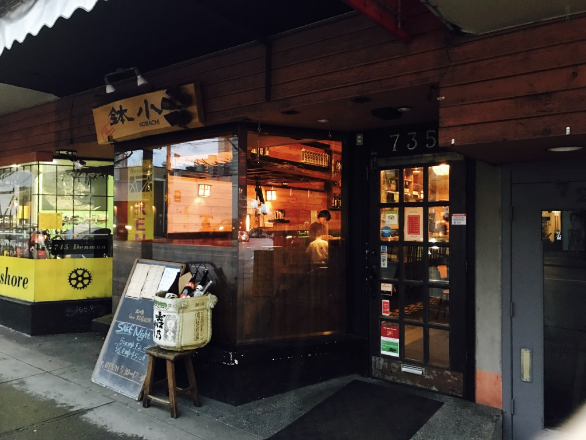

Written on 10-21-2017
Japanese food and its broad genres have always impressed me. From sushi to ramen, modern cooking to traditional, historical cuisines, there are so many selections of fine Japanese food that it is almost impossible to list them all. But for me, my favourite type of food has always been izakaya food, or Japanese bar food. Izakaya is a great place for people to relax, Japanese or not! Whether to have a party, to grab a quick drink after work or to have a date at a comfortable setting, izakaya became a popular choice for Vancouverian over the recent years. For me, it is the combination of great food and great drink for a reasonable price, as well as the cozy atmosphere that attracted my attention to izakaya. I could be sitting there for hours, enjoying the ambience and the food while staying relaxed for the whole time. That is how much I love izakaya, and talking about izakaya today I want to introduce one of the izakayas in Vancouver that quickly became one of my most favourite places to go: Guu Kobachi.
The first time I went to Guu Kobachi was a sake (Japanese wine) party event that I was invited on meetup. Not knowing what to expect, I tried their various selections of sake and food pairing that came with them and I was certainly not disappointed! From cold appetizer to hot winter food, chilled sake to warmed ones, it quickly intrigued me enough for a return trip.
Upon entering the restaurant, the first thing that grabbed my attention was the ambience - traditional wooden bar counter and shelves decorated in a modern style. This use of decoration created that fusion feel of the western bar we all love and the feel of izakaya that I personally enjoy. Bottles of sake, shochu (Japanese vodka) and Japanese whisky are lined up tidily on the shelf, providing a neat visual presentation of their drink selections.
The first thing I tried on their drink menu was their popular sake, which had a $2 off on that day: Dento sake from Fukumasamune company in Japan. For those of you not familiar with sake-pouring tradition, a ceramic, circular cup and a square plastic or wooden box underneath the cup are provided, and sake is poured to the up until it overflows about half of the square box, representing the izakaya’s overflowing generosity in providing you the sake. You can then pour the sake from the box to the cup anytime you would like! It is such a great tradition that I think many other countries should also follow in their drinking traditions. The total amount approximates to 5-6 oz of sake, or even more when the waiter/waitress pouring you the drink is super generous for the day!
The Dento sake had a very light flavor which I would recommend to beginners in sake drinking. The feel was smoother than water, and the light taste finishes with a gentle sweetness and nuttiness at the end of the sip. This is further enhanced by the sake’s fragrance as you take sips of it. The reason why sake goes so great with food is due to its subtle flavors which pairs well with the overall lightness of most Japanese food, especially sashimi. As a result, I ordered the Kanpachi sashimi, or greater amberjack sashimi, on their special menu.
The sashimi was freshly prepared in a open-kitchen setting as I watched my chef skillfully fillet the Kanpachi sashimi on a cutting board. A serving of the Kanpachi sashimi came in 6 decently thick pieces, plated with sliced daikon (white radish), shiso (Japanese minty leaves) and wasabi on the side. If you look closely at the pieces, the redness on the parts indicate freshness of the fish used for their daily specials. As I take a bite of the soysauce and wasabi seasoned Kanpachi, a mixture of deep fish umami, or savoriness, and the feel of natural fish fat exploded in my mouth. Unlike many other fishes, the texture of the fish was also firm for great chewing texture as the fish’s wonderfulness continued to linger. This is the reason I love Kanpachi - a great balance of flavor and texture, and there was no fishness to this particular fish with rich umami. Paired with sake, the sashimi was really enjoyable until the last bite.
Feeling a bit more adventurous after my sashimi time, I ordered one of their recommended shochu on the drink menu called Yamaneko. Shochu, similar to vodka, can be distilled from different base ingredients such as barley, sweet potato or rice, and can served in many ways - straight, diluted with water or on the rock. It is generally lighter than vodka, about 25% alcohol content if unaged, and most Japanese people drink them diluted with water. On the other hand, I prefer drinking shochu on the rock to dilute it less but still chilled, so my Yamaneko was of course served that way as well. The Yamaneko shochu from Miyazaki prefecture, Japan is made from organic sweet potato of that region. It has a lighter feel that is almost reminiscent to sake, as the shochu was very smooth and not strong to the throat like most other bottles of shochu. The bright sweet potato aroma was also present and made the shochu more pleasant to drink. Almost needless to say, its light nature complemented the food very well and provided a better dining experience for me.
My next dish was called Chicken Nanban. The Nanban style refers to a sweet-sour taste of ingredients such as chicken or saba (mackerel) marinated and served with tartar sauce. In this case, tender chicken thighs were used as the base and paired with onion slices as well. The sweet-sour flavor reminds me of a Japanese-Chinese fusion taste, and the onion, which was marinated instead of caramelized, enhanced the dish’s sweetness and gave it a crunchier texture. The tartar sauce also added richness to the dish, making it an excellent choice for bar food to replace the karaage (Japanese fried chicken) that most people would order.
The entree of the day for me was assorted oden, or a dish with simmered ingredients in a specialized Japanese broth. Those ingredients included various styles of tofu, a fish cake, an egg and a slice of daikon. Usually, the dashi, or Japanese soup stock, is used to boil the ingredients over a period of time until they fully absorb the essence of the soup. The dish is meant to be enjoyed with varieties of ingredients for different textures, flavors, and level of juiciness although the same stock is used. Upon drinking the soup and savoring the ingredients, I was also warmed up by the hot soup, which is why it is an excellent dish for the cold Vancouver weather. On the side, karashi, or Japanese mustard, was served and can be eaten with the ingredients based on one’s preference (in my case I take a moderate amount just like how I like my wasabis).
Last but not least I had the cheese tofu, served with toasted bread, honey on the bottom and almonds on top. For me, this is Guu Kobachi’s take on the traditional cheesecake, which replaced the vanilla commonly used with tofu and the crust with toasted bread and almonds. Honey was then used to elevate the sweetness that the cake, and I could control how sweet the cake was with amount of honey dipped. Overall, it is much crunchier than the regular cheesecake from the bread, and the blended flavor of cheese and tofu added the Japanese twist I was looking for while not losing to the flavor of the original cheesecake. In the end, it fully satisfied my cheesecake cravings and finished the night on a great note!
Thank you Guu Kobachi for the great meal. I definitely recommend Guu Kobachi to anyone, whether those trying the izakaya for the first time or those who are veterans of izakaya but adventurous enough to explore a more modern izakaya setting.
Address: 735 Denman Street Vancouver, BC V6G 2L6
TEL: 604-683-0735
Dinner:
[Mon – Thu] 5:30pm – 0:30am
[Fri – Sat] 5:30pm – 1:30am
[Sun] 5:30pm – 11:30pm
Bookmark my blog or follow me on social media available at the bottom-right corner for more exciting posts!